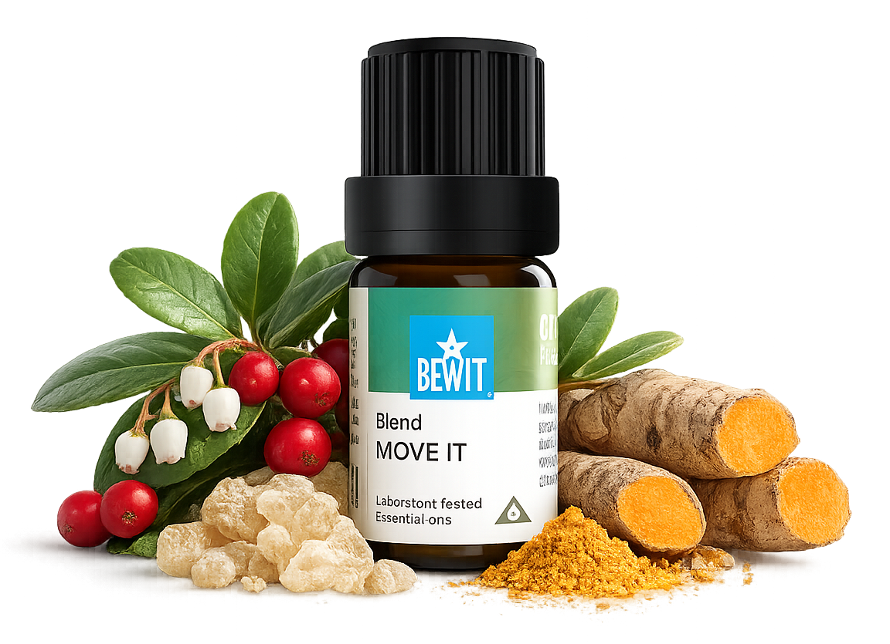

Artritida je dlouhodobé téma — esence nejsou léčba, ale mohou být příjemnou každodenní podporou, která tělu pomáhá lépe fungovat. Při pravidelném používání a pohybu uvidíte rozdíl. Výsledky přicházejí s pravidelností — dopřejte si čas.

pro pohyblivost a úlevu od bolesti
Hledáte esenciální olej na artritidu a bolest kloubů? Bolest kloubů, ztuhlost, omezená pohyblivost nebo záněty — ukáži vám, jak přirozeně podpořit pohybový aparát, zmírnit bolest a vrátit tělu větší volnost pohybu.

Směs pro klouby a celý pohybový aparát.
Pomáhá při bolestech kloubů, artritidě, ztuhlosti, omezené hybnosti i po fyzické námaze.
Jak použít: naneste trochu nosného oleje (např. jojobový nebo kokosový) na klouby a okolní svaly, přidejte 1 kapku a jemně vmasírujte — opakujte 2–4× denně.
Více způsobů aplikace →
Jak použít: 1–3 malé lžičky 3× denně.
Chci podpořit klouby zevnitřJak použít: naneste trochu nosného oleje (např. kokosový) na klouby a okolní svaly, přidejte 1 kapku a jemně vmasírujte.
Chci tlumit zánětyJak použít: naneste trochu nosného oleje na postižené místo, přidejte 1 kapku a vmasírujte.
Chci podpořit kostiJak použít: naneste trochu nosného oleje, přidejte 1 kapku a vmasírujte do postiženého kloubu.
Chci komplexní regeneraciJak použít: naneste trochu nosného oleje na postižené klouby, přidejte 1 kapku a jemně vmasírujte.
Chci úlevu od revmatismuJak použít: naneste trochu nosného oleje na oblast kostí, přidejte 1 kapku a vmasírujte, ideálně pravidelně.
Chci pevné kostiArtritida je dlouhodobé téma — esence nejsou léčba, ale mohou být příjemnou každodenní podporou, která tělu pomáhá lépe fungovat. Při pravidelném používání a pohybu uvidíte rozdíl. Výsledky přicházejí s pravidelností — dopřejte si čas.
Mohlo by vás také zajímat:
Move It je univerzální podpora pro klouby, kadidlo a Frankincense Quattuor tlumí zánět, RHE cílí přímo na revmatické potíže a BO/OSPO podporují pevnost kostí.
Při akutních potížích klidně 2–4× denně, jinak stačí pravidelná každodenní aplikace — pravidelnost má u chronických potíží větší význam než síla jednotlivé aplikace.
Ne, artritida a revmatismus patří k lékaři — esenciální oleje jsou jen doplňková podpora ke zmírnění příznaků a pohodlí, ne náhrada odborné léčby.
🌿 Všechny esence, které na tomto webu doporučuji, jsou od BEWIT. Jako registrovaný zákazník můžete nakupovat se slevou až 50 % na vybrané produkty.
Registrace u BEWIT zdarma →